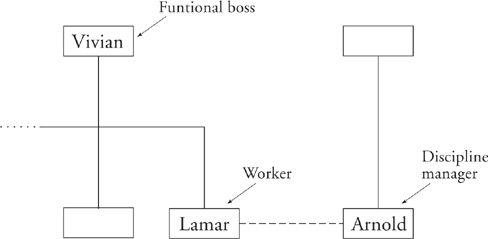
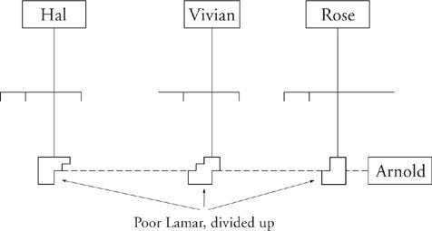

Matrix Management
The assumption of fungible humans has come into its own in that mainstay of organizational theory called matrix management. In a matrix-managed organization, each worker reports to two bosses. The boss drawn directly above the worker on the org chart is the functionally responsible manager, the person who gives that worker his or her marching orders. And the boss off on the side is the discipline manager, the one who is in charge (in some sense) of all workers with the same or similar skill sets. In the figure, Lamar, a layout artist, reports to Vivian, his project manager, but also reports to Arnold, who manages all the designers and artists. In project-related matters, it’s Vivian who is in charge. She decides what Lamar will be doing today and tomorrow. At raise time, though, it’s up to Arnold to perform the review, and Arnold is also responsible for Lamar’s training and advancement.

Half the world is so used to matrix management as to take the scheme for granted. The other half just thinks it’s bizarre. How on earth, this second group might ask, does Arnold know how well Lamar has performed except by talking with his real boss, Vivian? She knows and Arnold doesn’t, so why doesn’t she do the review? The same might be said for making the decision that Lamar is ready for increased responsibilities. Matrix management doesn’t make a huge amount of sense … until you hit upon the happy notion of treating Lamar as a totally fungible resource. That says he not only can be moved around freely but can be divided up.
In the next figure, we see Lamar involved on three different projects. Obviously, none of his bosses on the vertical can assemble a complete picture of how well Lamar is doing. Now at last there is a real need for Arnold.

This kind of matrix management is particularly appealing when none of the vertical bosses has enough need to justify a person full-time. It’s also handy when outside calls on a worker’s time are varied; let the guy work full-time on his main job but then get matrixed out on an as-needed basis. Companies that adopt this approach think of themselves as agile and infinitely flexible.